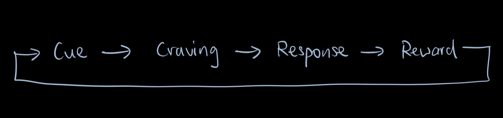

Book Review: Atomic Habits by James Clear
Ivan Chan Oct 17 2020. | Hamilton, ON | 5 min
Purchase on Amazon: Atomic Habits
Tiny Changes, Remarkable Results
These are the words from the book cover of Atomic Habits by James Clear. It’s funny how I thought the opposite of that statement was true — “BIG changes, remarkable results”.
Whenever I have a huge revelation or whenever I discover something magnificent in my life, for example, learning the guitar, I would always pour in the majority of my attention in trying to develop a habit — let say practicing chords for one hour everyday into my schedule. More often, these loaded habits that I am trying to squish into my schedule often end up in failure because I either lose motivation or I stop the habit for a few days then I never pick it back up again, leaving the habit I wanted to learn in limbo.
I think we all encounter this problem a lot. We want to develop a good habit or break a bad habit, but the changes we implement in our lives are often too big, so big that it overflows us with confusion that we don’t expect. Then after a while we get overwhelmed by the impracticality of our new changes and eventually give up.
Solving My Sleep Problems
I’ve always struggled with going to bed early, and I love to blame it on my body for being a “light sleeper”, or “oh because my body naturally takes longer time to fall asleep”. But, I firmly believe that through incrementally implementing tiny changes to my daily habits, I can sleep early AND fall asleep fast.
Let me explain how.
The Habit Loop
In the book, James Clear introduced the habit loop, basically it is a sequence of events that must occur for a good habit to stick or a bad habit to break, the graph looks like this:
For many instances, the visual cue of a bed brings me tiredness. This has caused me to take naps in late afternoon or early evening and push my sleep time at night way past midnight to three or even four in the morning. This makes me wake up at around noon to one in the afternoon. I’ve tried taking sleeping pills to adjust my sleep schedule and to reset my biological clock. Sadly, taking such medication has proven only to be a temporary relief as I return back to my bad habits.
My first step is to create and implement the intention: “When situation X arises, I will perform response Y.”. That is, when I feel tired at night, I will go back to my bedroom. For that, I decided to move my workspace to another location in the house.
The second step involves linking the cue of being tired to crave sleep on my bed. I turn off all my electronic devices and put my phone at an unreachable location within my room so I would not scroll my phone on my bed.
My response to the cue in my second step would be falling asleep with no distractions, and then my reward would be waking up early and energized. Thus, starting a new day fresh and early, reinforcing the habit of sleeping early.
”But, I am a light sleeper”
I admit that there are people who are light sleepers and people who fall asleep in a snap. In fact, my brother falls asleep within three minutes he hits his bed. While I do believe that we could be psychologically or genetically inclined to being a light sleeper, forming good habits can triumph our genetic predisposition.
READ MORE
The Millionaire Nextdoor
We live in a consumer culture. Everyday we are bombarded constantly by advertisements to purchase the latest phone, car, andgadget. Everyday we are surrounded by a “hypebeast” mentality that makes us think purchasing luxury items is somehow a “goal” we ought to achieve. [...]
Read MoreSecond Year Reflection
I’ve always thought of my first year as a “honeymoon” or en français “la lune de miel” phase of university. This is especially true when I am reflecting back as a fourth year student. Although I had a tough time adjusting myself to the university workload, I was not vulnerable mentally. [...]
Read More